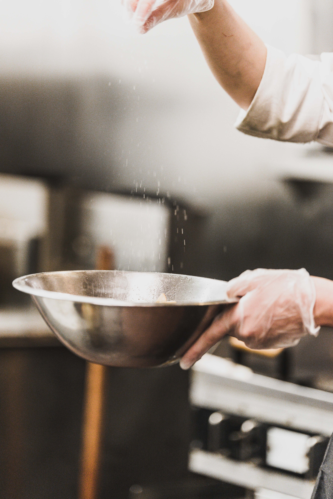

- Cake
- Bread
- Dessert
Intro

베이킹은 매우
즐겁고 창의적인 일이다
그리고 내 경우 스트레스 해소를 하고 싶을때
부엌에서 베이킹을 하면
반죽을 하고 빵을 성형하고 오븐에 넣어 구워내면서
스트레스가 풀려있는 것을 발견할 수 있다.
또한 베이킹은 그 산출물을
먹는 가족들에게도 기쁨을 주는 일이기도 하다.
예를 들면 빵을 굽는 동안
생성된 달콤하고 따뜻한 냄새는
학교에서 돌아와 현관문을 연 아이들에게는
맛있는 것이 기다리고 있다는
신호이기도 하기때문에
즐거워질 수 밖에 없다.
때로는 힘든 일로부터, 공부로 부터 받은 우울감을
달콤한 빵이나 케이크를 먹으면서 위로를 받을 수 도 있다.